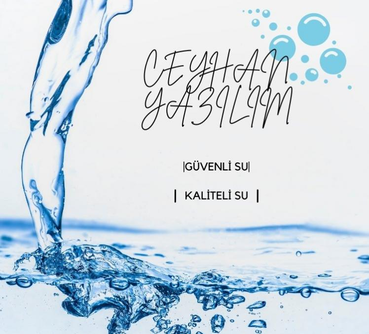

-
01
DESTEK HATTI
0111 111 11 11 -
02
SERVİS TALEP FORMU
TALEP GÖNDER

CEYHAN YAZILIM
SU ARITMA SİSTEMLERİ TASARIMI
HAKKIMIZDA
Su arıtma sistemleri konusunda uzmanlaşmış firmamız, sağlıklı ve temiz suyun yaşam kalitesini doğrudan etkilediğine inanan bir ekiple hizmetinizde. Kuruluşumuzdan bu yana, gelişen teknoloji ve bilimsel araştırmalar ışığında en yenilikçi arıtma yöntemlerini kullanarak, hem ev hem de endüstriyel alanlarda ihtiyaç duyulan suyun kalitesini artırmayı amaçlıyoruz.
Müşterilerimize sunduğumuz çözümler, sadece suyun içilebilirliğini sağlamakla kalmayıp, aynı zamanda çevreye duyarlı ve sürdürülebilir teknolojilerle desteklenmektedir. Arıtma sistemlerimiz, suyun içerisindeki zararlı maddelerin minimuma indirilmesi, mikroorganizmaların yok edilmesi ve mineral dengesinin korunması gibi önemli kriterlere uygun olarak tasarlanmıştır.
Uzman ekibimiz, müşteri ihtiyaçlarını detaylı bir şekilde analiz ederek, en uygun ve ekonomik çözümleri sunar.


MERAK ETTİKLERİNİZ? Sıkça Sorulanlar
Su arıtma cihazları, musluktan gelen sudaki kirleticileri, zararlı kimyasalları, bakterileri ve diğer zararlı maddeleri filtreleyerek daha temiz ve sağlıklı içme suyu sağlar.
Su arıtma cihazları, genellikle aktif karbon filtreleri, ters ozmoz (RO) sistemleri, UV ışık sterilizasyonu ve mineral ekleme filtreleri gibi çeşitli filtreleme yöntemleri kullanarak suyu temizler.
Evet, su arıtma cihazlarının filtreleri belirli bir kullanım süresinin ardından değiştirilmelidir. Filtre değişim süresi, cihazın modeline ve kullanım yoğunluğuna göre değişir, ancak genellikle 6 ayda bir değişim önerilir.
Su arıtma cihazı seçerken, cihazın arıtma kapasitesi, kullanılan filtreleme teknolojisi, suyunuzdaki kirleticilere karşı etkinliği ve bakım gereksinimlerini göz önünde bulundurmalısınız.
Su arıtma cihazlarının kurulumu genellikle profesyoneller tarafından yapılmalıdır. Kurulum işlemi, cihazın türüne göre değişiklik gösterse de uzman ekiplerimiz, hızlı ve güvenli bir şekilde kurulum sağlar.

ÇALIŞMA SÜRECIMIZ Süreç
İhtiyaç Analizi ve Danışmanlık
Müşterilerimizin su arıtma ihtiyaçlarını belirlemek için detaylı bir analiz yapıyoruz. Bu aşamada, suyun kalitesini ve ihtiyaç duyulan arıtma yöntemlerini belirlemek için sizlere profesyonel danışmanlık hizmeti sunuyoruz.
Kurulum ve Sistem Entegrasyonu
Seçilen su arıtma cihazlarını yerinde kuruyor ve sistemin doğru şekilde çalıştığından emin oluyoruz. Bu adımda, cihazlarınızın tüm bağlantıları yapılır ve suyunuzun arıtma kapasitesi optimize edilir.
Bakım ve Destek Hizmeti
Kurulumun ardından, cihazların verimli bir şekilde çalışması için düzenli bakım ve filtre değişim hizmeti sağlıyoruz. Ayrıca, her türlü arıza ve sorun için 7/24 destek sunarak cihazınızın sorunsuz çalışmasını garanti altına alıyoruz.
Müşteri Yorumları
Aldığımız Geri Dönüşler
Su Arıtma
Servis Talep Formu
HABERLER Son Makaleler ve Haberler
Su Arıtma Cihazlarında En Sık Görülen Sorunlar ve Çözümleri
1) Düşük Su Basıncı: Filtre veya Pompa Kaynaklı OlabilirSu basıncındaki azalma, genellikle filtrelerin tıkanması veya pompa arızasından ka...
Musluktan İçilen Suyun Kalitesini Artırmak: Su Arıtma Sistemleri ile İlgili Bilmeniz Gerekenler
1) Temiz ve Güvenli Su: Arıtma Sistemlerinin FaydalarıSu arıtma sistemleri, klor, kireç ve bakteriler gibi zararlı maddeleri filtreleyerek muslu...
Su Arıtma Cihazı Filtre Değişimi Ne Zaman Yapılmalı ve Neden Önemlidir?
1) Filtre Ömrüne DikkatHer filtrenin belirli bir kullanım süresi vardır. Bu süre aşıldığında filtrenin temizleme kapasitesi düşer, suyun ...